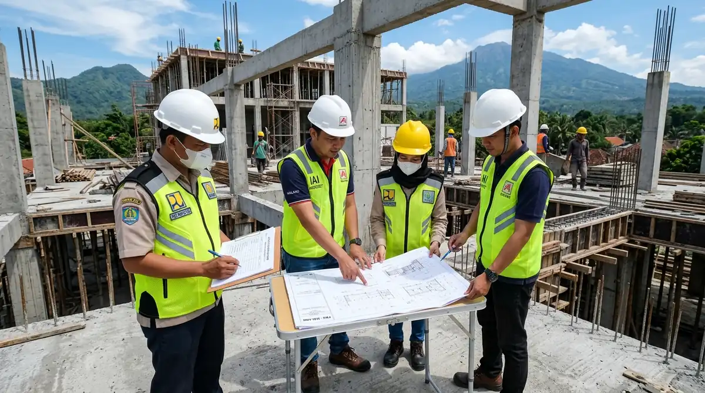

Ringkasan Inti
- PP Nomor 16 Tahun 2021 Pasal 45 ayat (1) mengatur sanksi administratif bertahap, mulai dari surat peringatan tertulis, penghentian pekerjaan fisik, hingga perintah pembongkaran paksa.
- Denda administratif pelanggaran perizinan dapat mencapai maksimal 10 persen dari estimasi nilai bangunan fisik yang dibangun.
- Ancaman sanksi pidana kurungan maksimal 3 tahun atau denda materiil berlaku apabila pelanggaran tata ruang atau kegagalan konstruksi merugikan keselamatan maupun harta benda orang lain.
- Rumah hunian yang telah terlanjur berdiri tetap memiliki mekanisme pemutihan legalitas melalui pengajuan PBG bangunan eksisting pada sistem SIMBG.
Daftar Isi Artikel
Sanksi bangun rumah tanpa PBG di Malang Raya berupa peringatan tertulis, penghentian pekerjaan lapangan, penyegelan oleh Satpol PP, hingga perintah pembongkaran, ditambah potensi denda administratif serta tuntutan pidana bila konstruksi merugikan pihak lain.
Regulasi PBG dan Urgensi Kepemilikannya bagi Pemilik Rumah
Persetujuan Bangunan Gedung (PBG) adalah dokumen persetujuan resmi yang diterbitkan pemerintah daerah atas rencana teknis bangunan gedung sebelum pekerjaan konstruksi dimulai. Berdasarkan Peraturan Pemerintah (PP) Nomor 16 Tahun 2021 sebagai turunan UU Cipta Kerja, PBG resmi menggantikan izin mendirikan bangunan (IMB) lama dengan paradigma baru yang berorientasi pada kepatuhan standar keandalan teknis.
Di wilayah aglomerasi Malang Raya—yang meliputi Kota Malang, Kabupaten Malang, dan Kota Batu—pengajuan PBG diproses secara terintegrasi melalui portal digital SIMBG (Sistem Informasi Manajemen Bangunan Gedung). PBG wajib dikantongi untuk proyek pembangunan rumah baru, penambahan lantai, renovasi struktural, hingga perubahan fungsi ruang. Tujuannya adalah memastikan setiap bangunan memenuhi parameter keselamatan struktural (tahan beban gempa), kesehatan lingkungan (ventilasi dan sanitasi), serta kepatuhan Garis Sempadan Bangunan (GSB) dan Koefisien Dasar Bangunan (KDB).

Tahapan Sanksi Administratif Membangun Tanpa PBG
Pemerintah daerah tidak serta-merta langsung merobohkan rumah yang dibangun tanpa izin. Berdasarkan PP Nomor 16 Tahun 2021 Pasal 45, penegakan hukum administratif dilakukan melalui tahapan peringatan dan penindakan bertahap:
- Peringatan Tertulis (SP 1 hingga SP 3): Dinas PUPR atau dinas perizinan menerbitkan surat teguran resmi agar pemilik rumah segera menghentikan aktivitas pekerjaan dan mendaftarkan dokumen teknis ke SIMBG dalam batas waktu yang ditentukan.
- Pembatasan dan Penghentian Kegiatan Konstruksi: Jika teguran diabaikan, tim pengawasan bersama Satpol PP akan memasang garis pengaman atau plang peringatan penghentian pekerjaan konstruksi di lokasi proyek.
- Penyegelan dan Pembekuan Izin: Bangunan yang tetap membandel menjalankan pengecoran atau pemasangan bata akan disegel secara resmi, melarang segala bentuk aktivitas material di area proyek.
- Denda Administratif Maksimal 10%: Pemilik bangunan dapat dijatuhi denda uang tunai hingga maksimal 10 persen dari nilai taksiran bangunan fisik yang sedang dibangun sebelum proses legalitas dapat dibuka kembali.
- Perintah Pembongkaran Bangunan: Merupakan sanksi pamungkas apabila bangunan melanggar rencana tata ruang wilayah (RTRW), berdiri di sempadan sungai/jalan, atau struktur dinyatakan sangat membahayakan keselamatan umum dan pemilik menolak melakukan perbaikan teknis.
Catatan Arsitek Malang
Biaya pendampingan jasa arsitek untuk menyusun gambar teknis DED standar SIMBG jauh lebih murah dibandingkan risiko denda administratif 10% nilai proyek atau pembongkaran struktur kolom beton yang melanggar sempadan jalan di Malang.
Potensi Sanksi Pidana, Dampak Finansial, dan Penanganan Bangunan Eksisting
Selain sanksi administratif, pemilik bangunan menghadapi potensi sanksi hukum pidana bila konstruksi yang dilakukan menimbulkan kerugian bagi pihak ketiga. Ketentuan ini bersumber dari UU Nomor 28 Tahun 2002 tentang Bangunan Gedung, di mana kegagalan bangunan yang mengakibatkan kerugian harta benda dapat diancam pidana kurungan hingga 3 tahun atau denda setinggi-tingginya 10 persen dari nilai fisik bangunan.
Dari sisi keperdataan, merujuk Pasal 1365 KUHPerdata, tetangga yang merasa dirugikan akibat pembangunan rumah tanpa izin—misalnya dinding retak akibat galian pondasi, talang air yang melimpas ke pekarangan sebelah, atau bukaan lantai 2 yang melanggar privasi—memiliki hak hukum untuk mengajukan gugatan ganti rugi dan menuntut penghentian proyek ke pengadilan negeri.
Tidak hanya itu, ketiadaan PBG berdampak langsung pada nilai likuiditas properti. Rumah tanpa PBG tidak bisa diterbitkan Sertifikat Laik Fungsi (SLF) yang berlaku selama 20 tahun bagi rumah tinggal tunggal. Dampaknya, properti tersebut ditolak sebagai agunan perbankan untuk pengajuan KPR/kredit konstruksi serta sulit diperjualbelikan dengan harga pasar wajar.
Bagi pemilik yang rumahnya sudah terlanjur berdiri tanpa PBG, langkah terbaik adalah mengajukan permohonan PBG Bangunan Eksisting. Konsultan arsitek akan melakukan pengukuran ulang di lapangan, menyusun gambar arsitektur dan struktur terbangun (as-built drawing), serta melakukan pengujian visual keandalan bangunan sebelum berkas diunggah ke dashboard SIMBG daerah.
FAQ (Pertanyaan Sering Diajukan)
Apakah rumah tanpa PBG di Malang pasti dibongkar?
Tidak pasti. Pembongkaran merupakan sanksi tahap akhir menurut PP 16 Tahun 2021 dan umumnya didahului peringatan tertulis, pembatasan kegiatan, hingga penyegelan. Pemilik masih diberi kesempatan untuk mengurus PBG bila bangunan memenuhi standar teknis keandalan.
Berapa denda maksimal bangun rumah tanpa PBG?
Denda administratif dapat mencapai paling banyak 10 persen dari total nilai bangunan menurut PP 16 Tahun 2021, disesuaikan dengan tingkat keparahan pelanggaran dan ketetapan resmi dari dinas teknis pemerintah daerah setempat.
Apakah PBG sama dengan IMB?
PBG resmi menggantikan IMB sejak berlakunya PP 16 Tahun 2021. PBG lebih menekankan pada kepatuhan standar teknis konstruksi, keselamatan, kesehatan, dan kenyamanan, sedangkan IMB berfokus pada izin administratif perizinan mendirikan bangunan.
Di mana PBG rumah di Kota Batu atau Kabupaten Malang diajukan?
Pengajuan PBG dilakukan secara mandiri atau didampingi konsultan arsitek secara online melalui portal resmi SIMBG Kementerian PUPR (simbg.pu.go.id), dengan memilih dinas teknis pemerintah daerah tempat lokasi lahan berdiri (Pemkot Malang, Pemkab Malang, atau Pemkot Batu).
Hindari Sanksi Hukum & Amankan Legalitas Bangunan Anda
Konsultasikan kebutuhan gambar teknis DED, perhitungan struktur tahan gempa, dan pendampingan PBG SIMBG bersama tim Arsitek Malang.

Naura Regyna Putri
Penulis & Tim Riset Arsitektur Maroon Arsitek Malang, spesialis regulasi legalitas PBG/SIMBG, perizinan tata ruang kota, dan manajemen konstruksi hunian di Malang Raya.